夜夜夜夜耶！(๑≧▽≦)و<
来源：北京东城
夜幕降临
被绚烂灯光点亮的东城
焕发出新的活力
“深夜食堂”里人群熙攘
“深夜书房”里身影流连
……
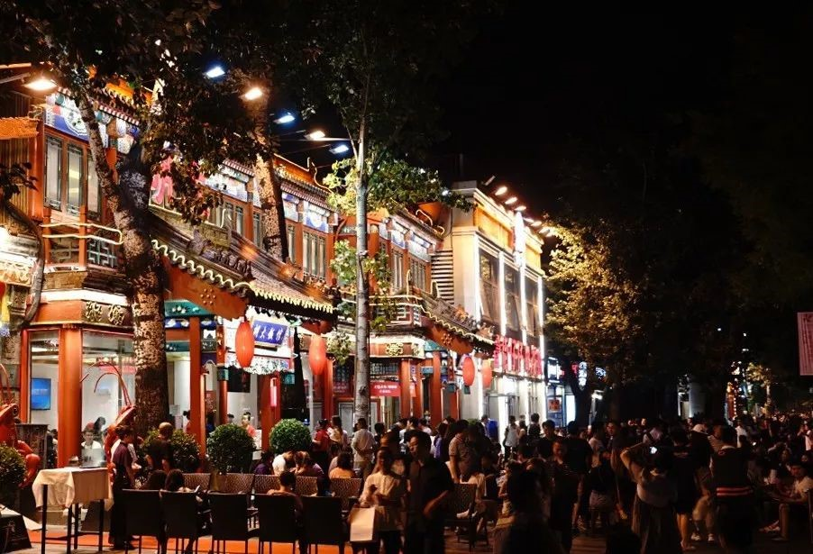 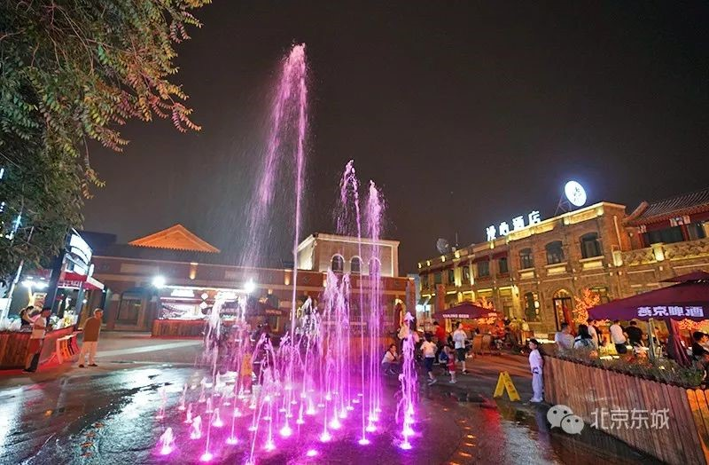东城驻地机构及企业
也借助自身文化优势
开启“夜间经济”的大门
让东城的夜生活
多了深度、底蕴和文化味儿
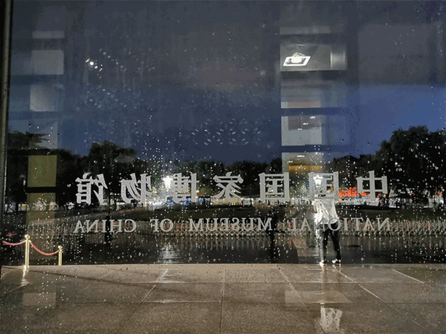珐琅厂夜市迎来“开门红”
自7月底至10月期间，每周五、周六晚17时至22时，“梦幻景泰蓝读书会”“梦幻景泰蓝夜游会”“梦幻景泰蓝体验会”“梦幻景泰蓝惠民夜”“梦幻老字号非遗夜市”等活动在珐琅厂缤纷亮相。
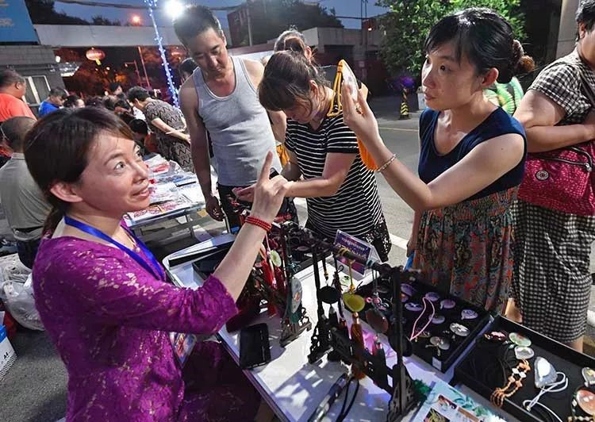 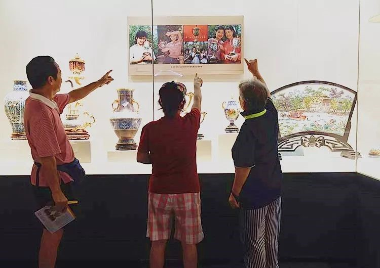夜场活动受到参观者青睐
“听说珐琅厂举办景泰蓝夜场文化体验活动了，咱们看看都有什么活动。”晚6时，积攒了一天的炎热还未消散，几位老街坊一边聊着，一边走进位于安乐林路10号的北京市珐琅厂。
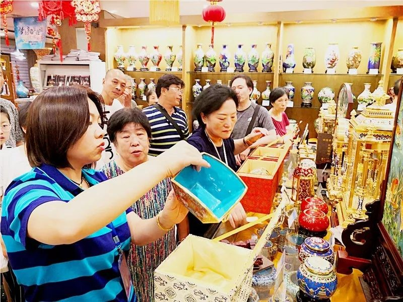来自江苏无锡的游客白梦在京旅游期间得知北京市珐琅厂举办夜场活动的消息，便拉着两位朋友一同前来。参观了三层的景泰蓝艺术博物馆和二层的制作车间，又在一层选购了心仪、精美的景泰蓝工艺品，三人惊叹于景泰蓝制作工艺的神奇和大师们的匠人精神，离去时仍意犹未尽。
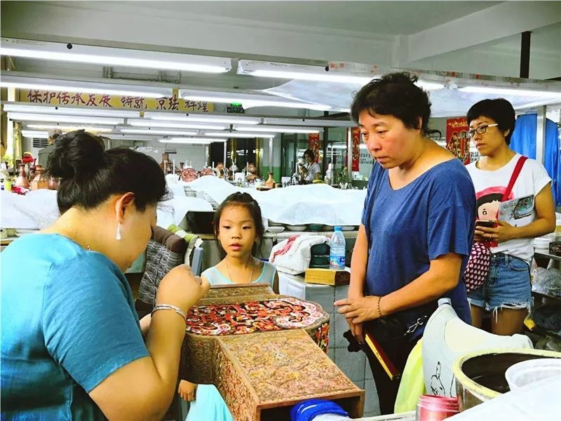景泰蓝技艺互动体验中心则受到家长和孩子们的青睐，在这里不仅能得到大师们的指点，还能亲自动手完成一件景泰蓝作品。
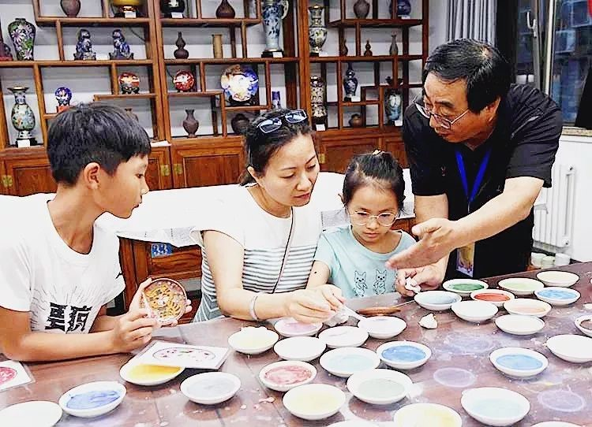而正在厂区内进行的“梦幻老字号非遗夜市”同时引进了北京前进鞋厂、北京制帽厂、北京剧装厂、红螺食品、百花蜂蜜等老字号，以及内画制作技艺、料器制作技艺、剪纸制作技艺、扇画制作技艺、绢花制作技艺等非遗企业及民间工艺共同参与，也吸引了大批居民前来参观选购。
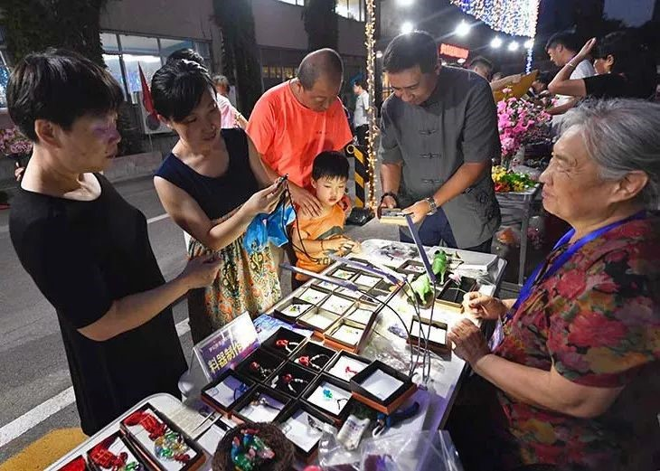北京民间工艺师潘旭手绘的团扇、石画不仅美观好看，并且独一无二；相邻展台上摆满了料器国家非遗传承人邢兰香的佳作……一件件精品令附近居民姚荔爱不释手：“没想到家门口有这么精彩的夜市活动，不仅能买到非遗工艺品和老字号商品，还能学到很多知识。”
周末体验夜持续至10月
北京市珐琅厂党总支书记谢燕华表示，为响应北京市繁荣夜间经济的号召，北京市珐琅厂依托景泰蓝艺术博物馆、景泰蓝技艺互动体验中心以及“京珐艺苑”工厂店，在7月至10月期间每周五、周六17时至22时，举办梦幻景泰蓝夜场文化体验之夜活动。
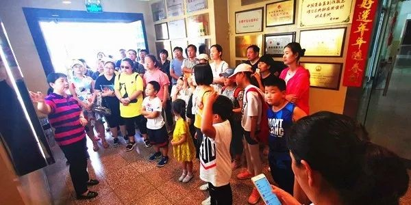据介绍，活动期间，“梦幻景泰蓝读书会”将以景泰蓝图书馆为依托，以讲故事的形式介绍景泰蓝历史和景泰蓝作品；“梦幻景泰蓝夜游会”将由区级、市级、国家级传承人及市级、国家级大师、高级技师作为主讲人，带领市民参观景泰蓝艺术博物馆；“梦幻景泰蓝体验会”中，市民可以走进技师们工作的北京市珐琅厂制作车间，在高级工艺技师的指导下，亲自尝试掐丝、点蓝等景泰蓝制作技艺，体验一回当“大国工匠”的感觉；“梦幻景泰蓝惠民夜”将在“京珐艺苑”工厂店开展限时优惠购活动，每次推出10件七至八折的限时特价产品，所有商品可享受“惠民券”优惠活动，国外游客可持护照办理离境退税。
夜场活动
1.梦幻景泰蓝读书会、梦幻景泰蓝夜游会：7月至10月每周五17时至22时
2.梦幻景泰蓝体验会：7月至10月每周五、周六17时至22时
3.梦幻景泰蓝惠民夜：7月至10月每周六17时至22时
4.梦幻老字号非遗夜市：7月至10月每周六、中秋节17时至22时
地址：安乐林路10号
电话：010-67211677
国家博物馆暑期周日开夜场
7月28日晚，国家博物馆开启“博物馆奇妙夜”，首次延长开放时间至21时。今年暑期，国博将在每周日推迟闭馆，开夜场度夏。
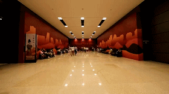六大展览有晚间讲解
国家博物馆北2、北3展厅正在展出“大美亚细亚——亚洲文明展”，这是我国首次举办亚洲大家庭共同参与的集大成亚洲文明专题展览，参展国家数量、文物数量和精致程度前所未有。
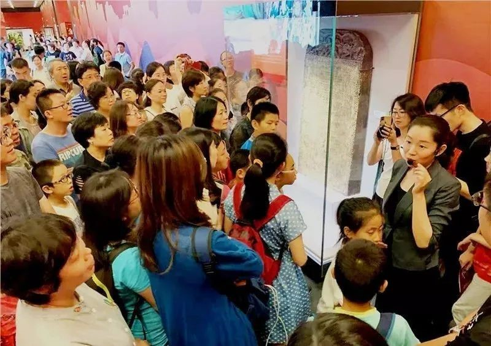当晚，在讲解员讲解结束后，数十名观众鼓掌致意，向讲解员细致、全面的讲解表示感谢。据介绍，国家博物馆在18时至20时延时开放期间，分别在“古代中国”“复兴之路”“大美亚细亚”“丝路孔道”“云鬓珠翠”“万里同风”六大展览安排专人讲解服务，力争为观众带来更好的观展体验。
餐饮和文创服务均延时
据悉，国家博物馆延时开放期间，除多项大展全部开放，观众在夜游博物馆之余，还可以享受餐饮、文创等服务。
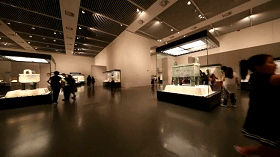在文创产品销售区，周女士正领着女儿挑选礼物。铅笔、橡皮、笔记本、尺子……丰富的文创产品不免令小姑娘有些“眼花缭乱”。最终，母女二人选定了一件“镀金点翠鸟架步摇”夜光书签。“这些文创产品具有丰富的文化内涵，希望女儿能珍藏这份礼物，让这次参观变得更加有意义。”周女士说。
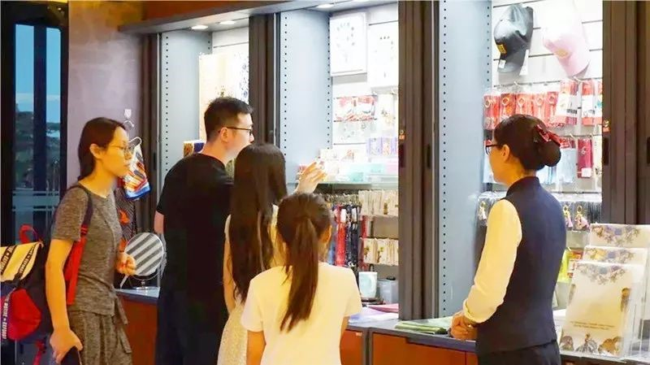工作人员介绍，作为文物收藏量最丰富的博物馆之一，独特丰富的馆藏资源成为国博文化衍生品开发的重要文化资源。国博文创根据国博文物元素开发了3000余款文创产品，涵盖了首饰、文具、提包、家居、生活配件、非遗工艺品等多个领域。
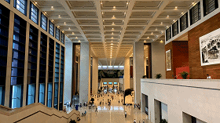据介绍，国博延时开放时段施行全员实名预约参观机制，预约人数为1万人，额满为止。观众既可预约周日当天入馆、从白天一直看展到晚上，也可单独预约夜晚时段。以上预约均可在官网及手机端进行。
夜场活动
时间：周日17时至20时可入馆，当日20时停止入馆，20时30分观众退场，21时闭馆。
地址：东长安街16号
参与方式：个人或团体观众需提前在国博官方网站或微信预约。未提前预约的观众，在未达到当日额定预约上限时，可在现场扫描二维码预约。
温馨提示
1.入场前请携带本人身份证件，以备现场验证。
2.预约成功后，预约码不可转让，只限预约本人使用。
角图夜读 多姿多彩
二环线东南角护城河拐弯处，河水清清、碧波荡漾。一座角楼临街矗立，河水倒映着它古色古香的身影。这座拥有455年历史的古建是角楼图书馆所在地。
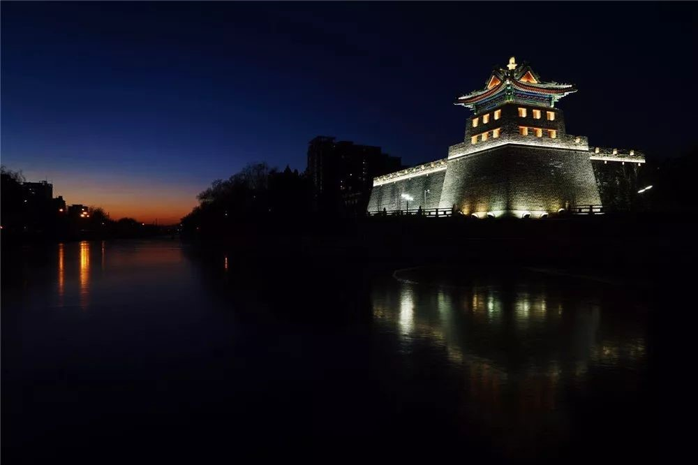星空影院吸引跨区观众
“夫天地者，万物之逆旅；光阴者，百代之过客。”7月26日19时30分许，天色渐晚，角楼图书馆传来阵阵诵读声，参加“角图夜读——跟着名家读古文”活动的市民正在跟随领读人文雯品读李白的《春夜宴桃李园序》。
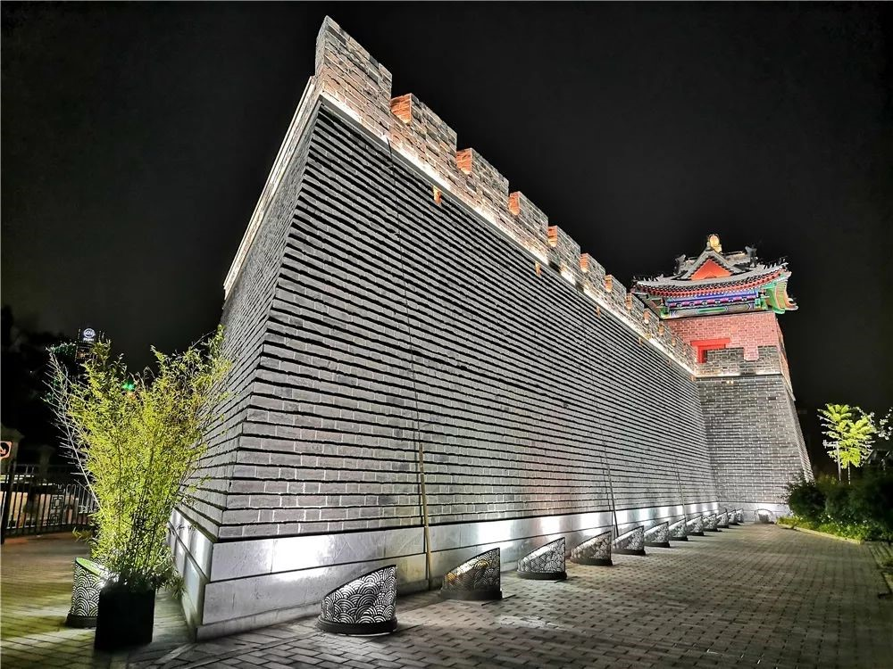欣赏了古琴曲、聆听了不同方言的古文吟诵、观看了主题动画片，一场活动下来，东花市街道居民魏杰感觉收获满满。魏杰是一位科研“白领”，同时是一位古文爱好者，正在读一年级的女儿爱好诗词。“夜读活动形式多样、知识讲解由浅入深，不同年龄段的人都能在这里学到知识。”魏杰说。
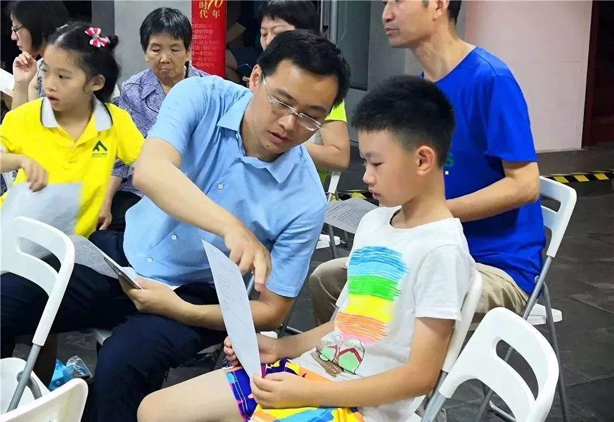当日20时，暑热褪去，夜色渐浓。夜读活动接近尾声，角楼图书馆三层的“角图星空电影院”则聚起另一番热闹景象。人们头顶星星、身披月光，在清风与蝉鸣中享受着露天电影带来的喜悦与怀旧。
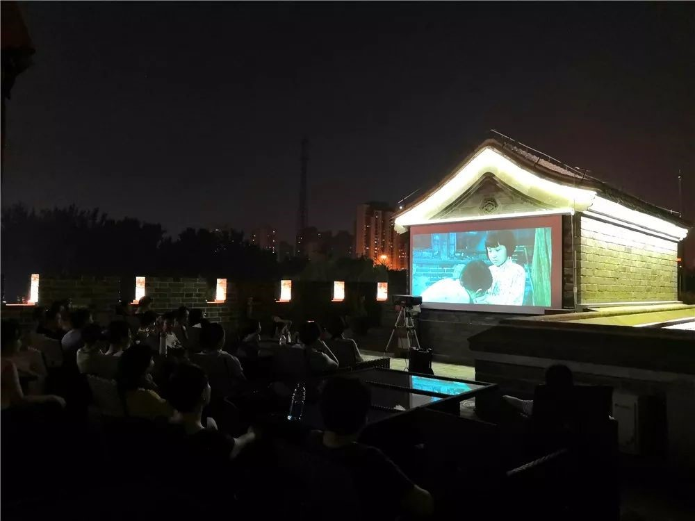影院不仅吸引了附近居民，更有远道慕名者驱车而来。来自海淀区的居民海燕年初偶然关注了角楼图书馆公众号，此后便成为星空电影院的忠实影迷，“每月至少会带9岁的女儿来一次。”望着远处飞驰而过的火车、近处凝固历史的城墙，看着银幕上变换的光影，海燕与女儿在这样的环境中一同感受着老北京的历史底蕴与文化脉络传承。
预约门票半小时抢完
正值暑假，两场活动现场可谓“盛况空前”——原本限额30人的夜读活动吸引50余人报名参加，其中青少年占了30%，另有近50%是陪着孩子前来的父母。据了解，星空电影院影讯一经角楼图书馆微信公众号公布，20组家庭共计40张门票半小时内便被一抢而空。
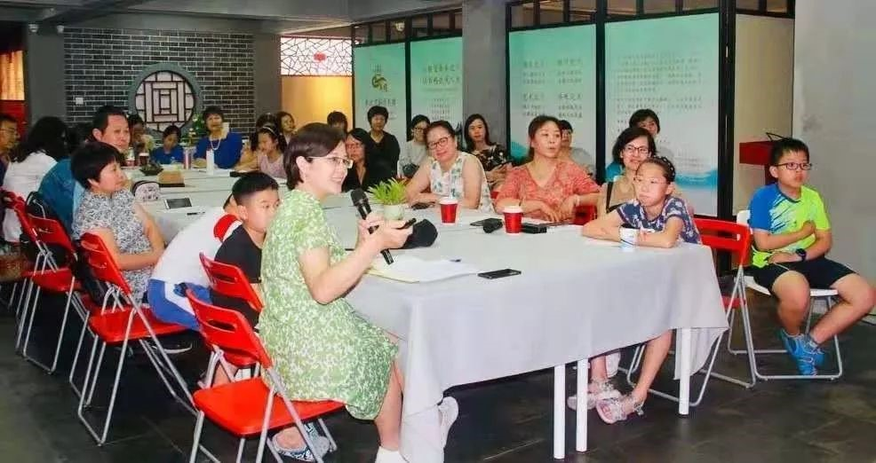“最快的时候不到10分钟，电影票便会被抢光。”作为一名管理人员，郭海涛参与了角楼图书馆迄今为止的全部夜场活动。据他介绍，除每周五定期举办的上述两场活动外，同样受到居民追捧的还有“角图奇妙夜”活动。
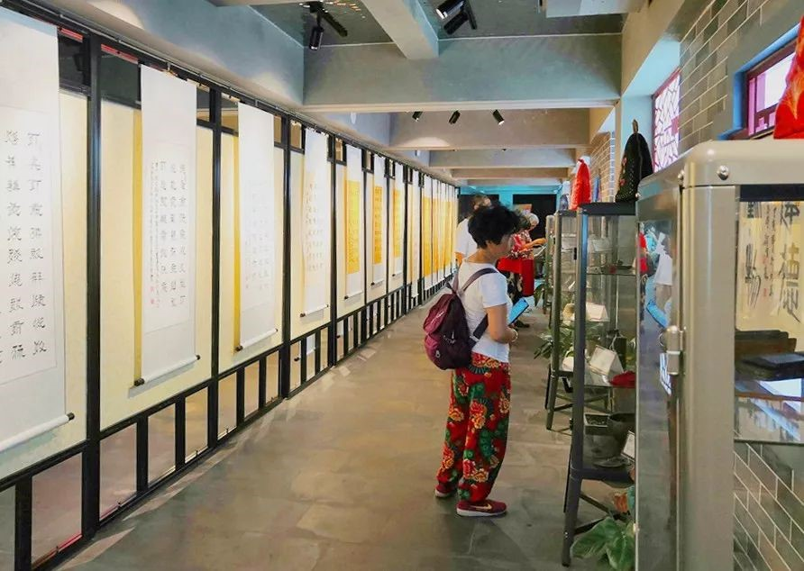据统计，自2017年10月28日开馆以来，角楼图书馆共举办夜场活动87场，直接参与者2100余人。郭海涛介绍，角楼图书馆从年轻人的阅读习惯及时间因素出发，特别推出了一系列夜场活动，旨在以立体阅读的模式吸引读者的关注与参与。通过营造三维立体的阅读氛围，让参与者不仅可以从书本中汲取知识，更能亲身在环境中体验场景式的文化熏陶。
夜场活动
1.角图夜读——跟着名家读古文：每周五19时至21时
2.角图星空电影院：每周五20时至22时
3.角图星空奇妙夜：结合气候、节日等不定期举办
地址：龙潭东路9号
参与方式：关注“角楼图书馆”微信公众号报名
电话：010-80699823